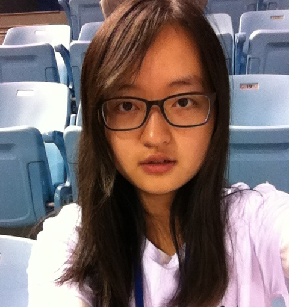

People
Group Leader
Dr. Yun-Feng Xiao

- Associate Professor with tenure
- B.S.(2002), Ph.D(2007), University of Science and Technology of China
- Room: West 446, Physics Building, Peking University
- Phone: 86(10)6276.5512
- E-mail: yfxiao[AT]pku[DOT]edu[DOT]cn
Postdoctoral and Graduate Students
Yanyan Zhi
- Postdoctoral scholar
- Ph.D., University of Alberta (Canada), 2014
- E-mail: yzhi[AT]pku[DOT]edu[DOT]cn
Xiao-Chong Yu,

- Ph.D. candidate 2012
- B. S., Peking University, 2012
- E-mail: yuxc[AT]pku[DOT]edu[DOT]cn
Li Wang,
- Ph. D. candidate 2013
- B. S., Peking University, 2013
- E-mail: windwang[AT]pku[DOT]edu[DOT]cn
Jian-Ning Xu,

- Ph.D. candidate 2014
- B. S., Nanjing University, 2014
- E-mail: jnxu[AT]pku[DOT]edu[DOT]cn
Shui-Jing Tang,

- Ph. D. candidate 2015
- B. S., Wuhan University of Technology, 2015
- E-mail:
Qi-Tao Cao,

- Ph.D. candidate 2015
- B. S., University of Science and Technology of China, 2015
- E-mail:
Shu-Xin Zhang,

- Master degree candidate 2014
- B. S. in School of Physics, Najing University, 2014
- E-mail: zsx_op[AT]pku[DOT]edu[DOT]cn
Undergraduates
Rui-Shan Liu,

- Undergraduate 2012
- School of Physics
- E-mail: liuruishan[AT]pku[DOT]edu[DOT]cn
Ao-Xue Han,

- Undergraduate 2012
- School of Physics
- E-mail: han_ao_xue[AT]126[DOT]com
Kang-Jing Huang,
- Undergraduate 2012
- School of Physics
- E-mail: huangkangjing[AT]gmail[DOT]com
Xi Chen,
- Undergraduate 2012
- School of Physics
- E-mail: 1200011353[AT]pku[DOT]edu[DOT]cn
He-Ming Wang,
- Undergraduate 2012
- School of Physics
- E-mail: wangheming[AT]pku[DOT]edu[DOT]cn
Ze-Yang Li,
- Undergraduate 2013
- School of Physics
- E-mail: laser.li[AT]pku[DOT]edu[DOT]cn
Pai Peng,
- Undergraduate 2013
- School of Physics
- E-mail: 1300017609[AT]pku[DOT]edu[DOT]cn
Si-Zhen Wang,
- Undergraduate 2013
- School of Physics
Fei Gao,
- Undergraduate 2013
- School of Physics
Yu-Xin Wang,
- Undergraduate 2013
- School of Physics
Alumni
Yong-Chun Liu
9⁄2010 - 7⁄2015, Ph.D. Student
Principal Investigator
Qian Xuesen Laboratory of Space Technology
Bei-Bei Li
9⁄2009- 7⁄2014, Ph.D. Student
Post-doc
The University of Queensland
Xue-Feng Jiang
9⁄2009 - 7⁄2014, Ph.D. Student
Post-doc
University of Oregon
Yi-Wen Hu
9⁄2011 - 7⁄2014, Master Student
Ph.D. Candidate 2014
University of Maryland
Bo-Qiang Shen
2⁄2013 - 7⁄2015, Undergraduate
Ph.D. Candidate 2015
California Institute of Technology
Dong-Yu Chen
2⁄2013 - 7⁄2015, Undergraduate
Ph.D. Candidate 2015
University of Southern California
Zhou-Chen Luo
2⁄2013 - 7⁄2015, Undergraduate
Ph.D. Candidate 2015
University of Maryland, College Park
Yu-Feng Shen
2⁄2013 - 7⁄2015, Undergraduate
Ph.D. Candidate 2015
Carnegie Mellon University
Lin-Bo Shao
2⁄2012 - 7⁄2014, Undergraduate
Ph.D. Candidate 2014
Harvard University
Meng-Yuan Yan
2⁄2012 - 7⁄2014, Undergraduate
Ph.D. Candidate 2014
Stanford University
Wei-Liang Jin
2⁄2012 - 7⁄2014, Undergraduate
Ph.D. Candidate 2014
Princeton University
Yi-Xiang Liu
5⁄2012- 10⁄2013, Undergraduate
Ph.D. Candidate 2014
MIT
William Clements
9⁄2012- 7⁄2013, Visiting student
Graduate Student
M.S. student at École polytechnique, France
Hao-Kun Li
5⁄2011- 6⁄2013, Undergraduate
Ph.D. Candidate 2013
University of California, Berkeley
Xue-Xin Ren
5⁄2011- 6⁄2013, Undergraduate
Ph.D. Candidate 2013
University of California, Berkeley
Qi-Fan Yang
5⁄2011- 6⁄2013, Undergraduate
Ph.D. Candidate 2013
California Institute of Technology
Xu Yi
12⁄2009- 6⁄2012, Undergraduate
Ph.D. Candidate 2012
California Institute of Technology
Qiu-Shu Chen
5⁄2010- 6⁄2012, Undergraduate
Ph.D. Candidate 2012
University of Michigan]